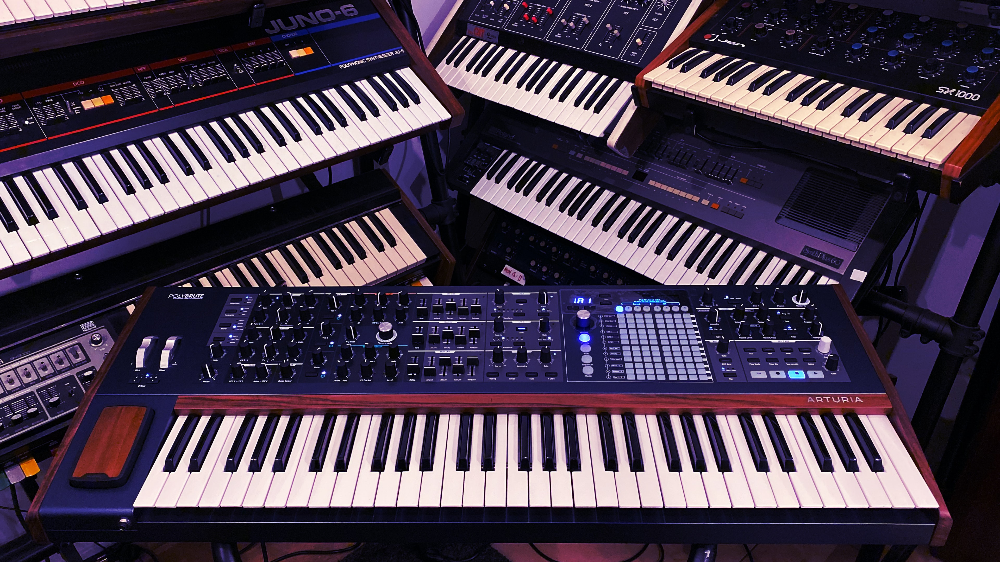
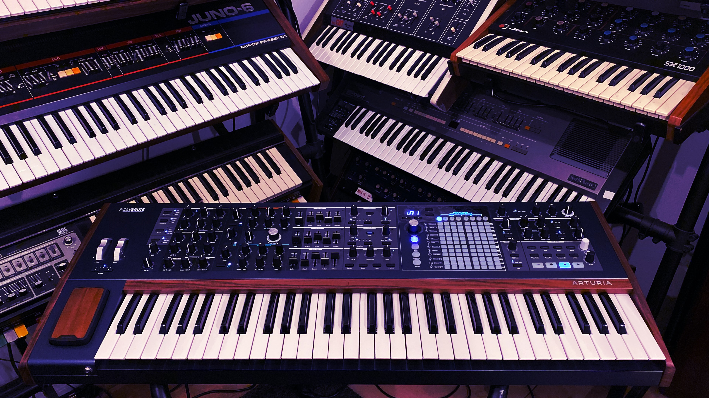
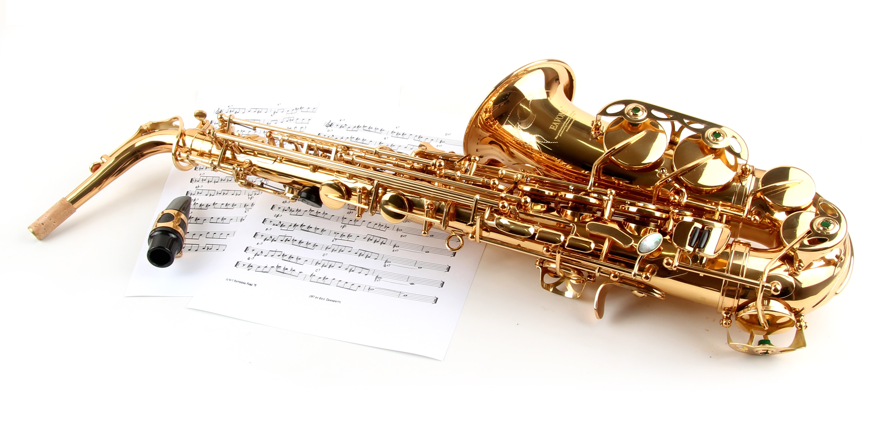
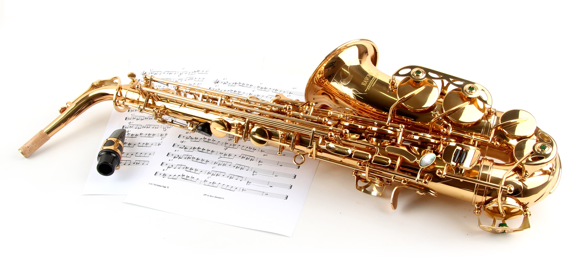

Questions to ask yourself
We all have preferences. Our individual taste in music is really unique to each of us. Have you ever thought about what makes you like something, or what keeps you from enjoying something else? Think about a sound you like, and consider these three questions.

 

 
